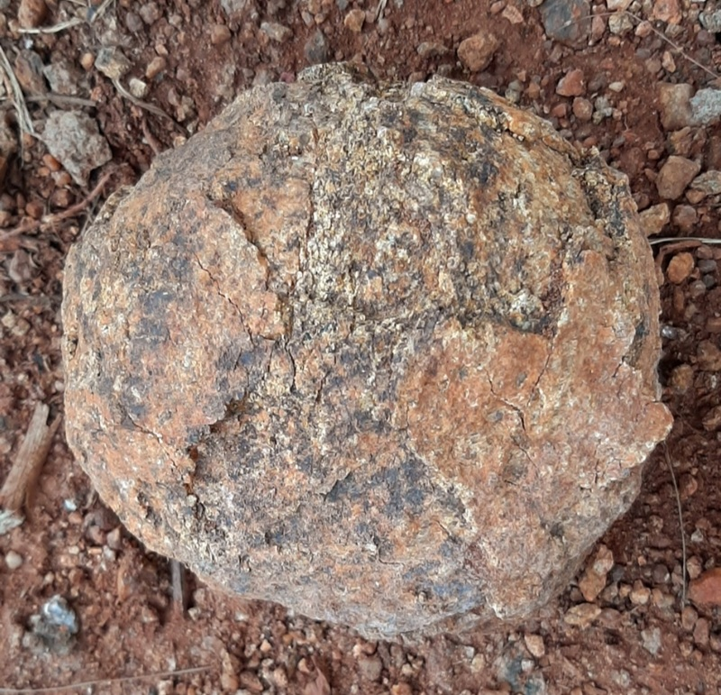

×
Tea-Time Curiosities

While we spend our pages exploring the intricate architecture of ancient trees and the resilient engineering of ecosystems, nature occasionally likes to play chef.
The Great Geological Sweet-Tooth:
The Tea-Time Question: If the earth itself is baking treats out of stone, what other hidden recipes are waiting to be discovered just off the beaten path?
The Verdict: Zero calories, highly durable but perhaps save it for the museum gallery rather than the tea tray!
"Geologist-approved but definitely not recommended for tea time."
Who baked this stone Laddoo?
Nature’s Bakery: When weathering and erosion try their hand at making traditional sweets—presenting the legendary Stone Laddoo!
Nature’s kitchen operates on deep time and this uncanny resemblance to a rustic sweet is a quiet reminder of how geological processes—like spheroidal weathering, concretion, or mineral accumulation—can mimic human creation in the most delightful ways.